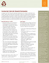

Check Out Our Most Recent Uploaded Research Resources! |
|---|
| The following fact sheets provide a detailed look at 10 groups of Asian Americans by national origin, including data on educational attainment, income and poverty, civic participation, language diversity, immigration and nativity, labor-force participation, and access to health insurance. | |
CPIC’s Health Research Partnership in Asian Communities (HRPAC) Research Partnership Development and Grant Writing Training Program Click this button |
Objective1: Identify the spectrum, principles, benefits, and challenges of Community-Based participatory Research; Identify the principles, common issues, benefits, and barriers to partnerships; and identify the qualities of a partner and a healthy partnership. Objective 2: Participants will be able to assess the stages of their partnership, including the needs and assets of each partner; identify and draft the purpose, components, and common mechanisms of partnership agreements; identify some common funding agencies and grant mechanisms; and identify four elements of a NIH proposal.
|
Standardizing survey questions for breast cancer research |
|
AAPCHO fact sheet Click this button  |
This AAPCHO fact sheet provides a set of research criteria to help Community Health Centers (CHCs) and community organizations evaluate their participation in research studies. Among other things this criteria, developed by CHC staff, community members, and academic partners, helps ensure that research is relevant and beneficial to the community being studied. The fact sheet, born out of discussions from a community research training, also exemplifies the significance and uniqueness of conducting research in a CHC setting.
|